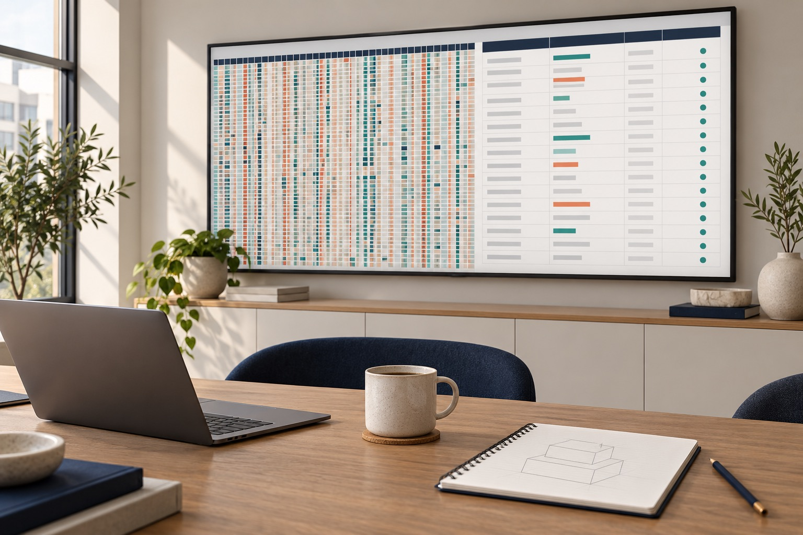

Insights · Smartsheet
Your Smartsheet outgrew itself. Here’s how to rebuild it without stopping the work.
Most Smartsheet setups are built fast, under pressure, to get a program moving. That’s the right call at the start. Here’s how to tell when it has stopped working, and how to rebuild it underneath without a risky big-bang switch.
Michael Ortiz, Founder & Principal, Portico Group
November 2026 · 7 min read

Almost every Smartsheet setup I’m asked to look at started the same way. A program had to get moving, someone built a tracker in a weekend, and it worked. Then the program grew. Every new question became a new column. Every new team got its own copy. A year later, the tracker that saved the launch is slowing everyone down.
None of that is a failure. Building fast was the right call. The problem is that nobody planned for the day the first build would need to change.
Six signs your setup has outgrown itself
- Your main sheet has more than 100 columns, and people scroll sideways to find anything
- The same item is typed different ways, so filters and lookups miss it
- Dates are stored as text, so you can’t calculate how long anything takes
- The same work is tracked in several sheets, and nobody can say which one is right
- A weekly or twice-weekly report is rebuilt by hand, often after hours
- Formulas are getting slow, or you’ve seen a warning about sheet size
If three or more of those sound familiar, the setup isn’t a tool anymore. It’s a job.
The math nobody checks
A standard Smartsheet sheet tops out at 500,000 cells, 400 columns, or 20,000 rows, whichever comes first. Rows times columns is what counts.
That sounds like plenty until a tracker puts every milestone in its own column. On one program we rebuilt, the main tracker had grown past 200 columns. With a couple thousand items to track, that put it at roughly 80% of the limit, with the program not even half done.
Share of the 500,000-cell sheet limit · a couple thousand items
The fix isn’t a bigger sheet. It’s a different shape.
Rebuild in three layers, each with one job
- 1A register of record. One row per item, holding what the item is: its ID, location, owner, and status. Reports, integrations, and lookups all read from here, so there is one answer to “which sheet is right?”
- 2A project plan template, with milestones as rows. Instead of 150 milestone columns, each project gets its own plan built from one template. Milestones become rows with a start, a finish, an owner, and a status. A new project is a new sheet, so capacity grows with the program instead of running out.
- 3Role-based views on top. People work in dynamic views, reports, or a Work App, never in the raw sheets. Each role sees and edits only what it owns. Access can be granted and revoked cleanly.
Two habits make the layers hold up. First, standardize IDs and dates on the way in, with dropdowns and date columns instead of free text. Second, let formulas flag what’s late, blocked, or missing, so quality checks become a short list a person can work, not a line-by-line review.
Don’t switch everything at once
The riskiest part of a rebuild isn’t the design. It’s the cutover. People have deadlines, and the old setup, for all its flaws, is how they hit them today.
- 1Stop the pain first. Automate the report people rebuild by hand. That buys goodwill and time for everything else.
- 2Pilot on a slice. Build the new model for one region, one project, or one batch of items. Keep it small enough to finish in weeks.
- 3Prove it with a real deliverable. Rebuild an actual report from the new model and compare it cell by cell against the old one. Every difference is either a bug to fix or a quirk in the old data to document.
- 4Run both, then retire one. Leave the old setup untouched while the new one runs beside it. Reconcile the two, then switch off the old one only when the team is ready.
The goal is that nobody notices the floor being replaced. They just notice that the report builds itself now.
A 30-day starting plan
- Week 1. Inventory every sheet, report, and automation. Note which sheet feeds which report, and which reports leadership actually reads.
- Week 2. Design the register and the plan template. Agree on ID formats, status values, and who owns each milestone.
- Week 3. Build the pilot and load one slice of real data.
- Week 4. Rebuild one real report from the pilot and match it against the old one. Decide what scales next.
When to bring in help
You can do most of this in house if someone has the time and the authority to change how people work. Outside help earns its keep when the program can’t pause, when the data carries legal or financial weight, or when nobody inside has built at this scale before. In those cases, a few weeks of design up front saves months of patching later.
Common questions
How many columns is too many in a Smartsheet sheet?
There’s no magic number, but past about 100 columns most sheets get hard to use and slow to calculate. The bigger risk is the 500,000-cell limit: rows times columns. A sheet with 200 columns can only hold about 2,500 rows.
Can I fix a slow Smartsheet without rebuilding it?
Sometimes. Moving heavy lookups into a small helper sheet, removing unused columns, and replacing whole-column references can buy real speed. If the sheet is growing sideways with a column for every milestone, though, those fixes only delay the rebuild.
How long does a Smartsheet rebuild take?
A focused pilot can be designed, built, and proven in about four weeks. Rolling it out across a whole program takes longer, and should run side by side with the old setup until the two reconcile.